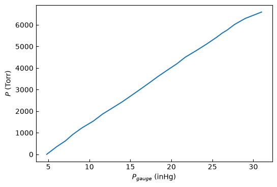

Computational Set: Data Analysis A — Linear Regression#
Calibration of a Pressure Gauge#
Learning objectives
Fit a linear data set \(y = mx + b\) and extract the slope and intercept together with their uncertainties.
Plot data and the regression line and judge the quality of a linear fit.
Report parameters and uncertainties with correct units and significant figures.
Background#
How do we know a gauge reads the correct value? We calibrate it against a known standard. Here a capsule vacuum gauge is calibrated against a closed-end mercury manometer, which we treat as the true pressure after a small correction for the thermal expansion of mercury:
The gauge response should be linear in pressure up to atmospheric pressure, so we model
In Excel you may have used the Regression tool to get \(m\), \(b\), and their standard deviations \(S_m\), \(S_b\). Here we do the same thing in Python with numpy.polyfit, which returns both the best-fit parameters and their covariance matrix — the square roots of its diagonal are exactly those standard deviations.
New to Python? Start here#
You don’t need prior programming experience for this set. Almost everything below is “fill in a short expression” using a handful of patterns. Here’s all the syntax you’ll need:
Comments. Anything after a
#is a note for humans; Python ignores it. The blanks you complete are marked with a comment like# <-- replace with your expression.Variables.
x = 5stores the value5under the namex. Names are case-sensitive (Tandtare different) and must be defined before you use them. Run cells top to bottom so each variable exists when later cells need it.Arithmetic.
+ - * /work as expected, and**is exponent (sox**2is \(x^2\)).Data Types
intare integers (counting numbers),floatare floating point numbers (numbers with decimal places,strare strings of characters (which can include numbers, letters, or other symbols).Arrays (NumPy). Our data lives in
np.array([...]). The big convenience: arithmetic acts on the whole array at once. Ifaandbare arrays,a - bsubtracts them element by element — no loop needed. Write the formula as ifaandbwere single numbers.Calling a function. A function takes inputs (arguments) in parentheses and often hands back a result you can store:
result = some_function(input1, input2). A function can return more than one value at once, which you catch with a comma:a, b = gives_two_things().Seeing output.
print(...)displays values so you can check your work.
💡 Want a proper, gentle introduction first? Work through the ESCIP “What is Python?” notebook — it covers variables, functions, lists, and more, with chemistry examples. Highly recommended if any of the above is unfamiliar.
Add a New to Matplotlib section here too!#
The data#
A run of the calibration produced, at each step:
P_dial— the vacuum-gauge dial reading (inHg, read to 0.1 inHg),h_left,h_right— heights of the left and right mercury menisci (mm),
together with the barometric pressure P_atm_inHg and the manometer temperature T_C.
Run the cell below to load the data — you don’t need to edit it.
import numpy as np
import matplotlib.pyplot as plt
# --- Experimental constants ---
P_atm_inHg = 29.62 # barometric (atmospheric) pressure, inHg
T_C = 22.5 # manometer temperature, degrees C
# --- Raw readings (one row per step) ---
P_dial = np.array([29.2, 28.0, 26.5, 24.8, 23.2, 21.4, 19.9, 18.3, 16.7, 15.0]) # inHg
h_left = np.array([749, 721, 680, 636, 596, 552, 513, 471, 429, 388], dtype=float) # mm
h_right = np.array([760, 759, 760, 760, 761, 761, 760, 760, 758, 761], dtype=float) # mm
print(f"{len(P_dial)} data points loaded.")
print("P_dial (inHg):", P_dial)
print("h_left (mm) :", h_left)
print("h_right (mm) :", h_right)
Step 1 — Build the derived columns#
In Excel you computed two new columns; here you build two NumPy arrays. NumPy applies an
arithmetic expression to every element of an array at once, so there is no need for a loop —
write the formula as if P_dial, h_left, and h_right were single numbers.
The gauge pressure (this will be the x data) is how far the true pressure sits above the manifold’s near-zero baseline, found by subtracting the dial reading from atmospheric pressure, in inHg.
The true pressure (the y data) comes from the manometer. In a closed-end manometer the pressure equals the difference in height of the two mercury columns. That raw height difference is then scaled by the thermal-expansion factor of Eq. (1) to give a result in Torr.
👉 Your task: translate those two sentences into array expressions where indicated.
# Thermal-expansion correction factor for mercury (the parenthesis in Eq. 1)
therm = 1 - 1.8e-4 * T_C
# x data, in inHg: atmospheric pressure - dial reading
P_gauge = P_atm_inHg - P_dial # <-- replace with your expression
# y data, in Torr: (right column height - left column height) scaled by therm
P_torr = therm * (h_left - h_right) # <-- replace with your expression
print("P_gauge (inHg):", np.round(P_gauge, 2))
print("P_torr (Torr):", np.round(P_torr, 1))
P_gauge (inHg): [ 4.8 6. 7.1 8. 9.1 10.5 11.6 12.7 14. 15.1 16.3 17.4 18.4 19.6
20.7 21.7 23.1 24.3 25.5 26.2 26.8 27.7 29. 31. ]
P_torr (Torr): [ 0. 348.6 627.6 926.4 1225.2 1544. 1862.8 2121.8 2430.6 2719.4
3038.2 3337. 3616. 3924.8 4203.7 4502.5 4821.3 5110.1 5418.9 5618.2
5757.6 6016.6 6295.5 6594.4]
Step 2 — Plot the data#
Always look at the data before fitting, so you can judge whether a straight line is even appropriate. We want an XY scatter plot of gauge pressure (horizontal axis) against true pressure (vertical axis), drawn as open markers with no connecting line.
Matplotlib reminder: ax.plot(x, y, 'o', mfc='none') draws open circles; the third argument
is a format string ('o' = circles, '-' = a solid line).
👉 Your task: supply the ax.plot(...) call that draws the data points.
fig, ax = plt.subplots(figsize=(6, 4))
# Draw the gauge pressure (x) against the true pressure (y) as open circles, no line.
ax.plot(P_gauge, P_torr ) # <-- pass x data, y data, and the format string
ax.set_xlabel('$P_{gauge}$ (inHg)')
ax.set_ylabel('$P$ (Torr)')
ax.tick_params(direction='in')
plt.show()

Working with your real data#
The small set above is easy to type by hand so you can get a feel for how the arrays work. Now let’s repeat the same analysis on your actual experimental run.
Expected format. Opened as a spreadsheet, your CSV should look like this (the loader below reads the atmospheric pressure and temperature from these exact positions, so keep the layout intact when you export from Excel):
Pdial (inHg),left (cm),right (cm),,Patm =,31.20,inHg
26.4,0,0,,T =,21.5,°C
25.2,18,-17,,,,
24.1,32,-31,,,,
...
Column 1 — the vacuum-gauge dial reading,
P_dial.Columns 2–3 — the left and right mercury meniscus heights.
To the right of the first two rows — the atmospheric pressure (
Patm =) and manometer temperature (T =), each followed by its value and unit.
Run the cell below, click Upload CSV, and choose your file. If your heights were recorded in
cm rather than mm, switch the Height units dropdown to cm — the next cell will
convert them automatically.
Important: the cell after the uploader overwrites P_dial, h_left, h_right,
P_atm_inHg, and T_C with your uploaded data. Once it’s run, scroll back up and re-run the
Step 1 and Step 2 cells above so P_gauge, P_torr, and the plot are rebuilt from your
real data — then continue on to Step 3 below.
from ipywidgets import FileUpload, Dropdown, VBox
from IPython.display import display
uploader = FileUpload(accept='.csv', multiple=False, description='Upload CSV')
unit_dd = Dropdown(options=['mm', 'cm'], value='mm', description='Height units:')
display(VBox([uploader, unit_dd]))
# Run this cell AFTER you've uploaded your file above.
# This OVERWRITES the hand-entered P_dial, h_left, h_right, P_atm_inHg, and T_C
# with your real data (re-run it any time you upload a new file).
import io
import pandas as pd
if len(uploader.value) == 0:
raise ValueError("No file uploaded yet — click 'Upload CSV' above, choose your file, then re-run this cell.")
# ipywidgets FileUpload.value is a tuple of dicts (v8+) or a dict keyed by filename (v7)
uploaded = uploader.value[0] if isinstance(uploader.value, tuple) else list(uploader.value.values())[0]
raw = pd.read_csv(io.BytesIO(bytes(uploaded['content'])), header=None)
# --- First three columns: Pdial, left, right ---
data = raw.iloc[1:, 0:3].reset_index(drop=True).astype(float)
data.columns = raw.iloc[0, 0:3].tolist()
P_dial = data.iloc[:, 0].values
h_left = data.iloc[:, 1].values
h_right = data.iloc[:, 2].values
# --- Convert heights to mm if they were recorded in cm ---
if unit_dd.value == 'cm':
h_left = h_left * 10
h_right = h_right * 10
# --- Metadata: atmospheric pressure and temperature, read from fixed positions ---
P_atm_inHg = float(raw.iloc[0, 5]) # value next to 'Patm ='
T_C = float(raw.iloc[1, 5]) # value next to 'T ='
print(f"{len(P_dial)} data points loaded from file.")
print(f"P_atm = {P_atm_inHg} inHg, T = {T_C} °C")
print("P_dial :", P_dial)
print("h_left (mm):", np.round(h_left, 2))
print("h_right (mm):", np.round(h_right, 2))
Step 3 — Linear regression with uncertainties#
numpy.polyfit(x, y, deg, cov=True) returns two things: the best-fit coefficients and the
covariance matrix of those coefficients.
For a straight line use degree
deg = 1.The coefficients come back highest power first, so the returned pair is
[slope, intercept].The standard deviations \(S_m\) and \(S_b\) are the square roots of the diagonal of the covariance matrix.
np.diag(cov)pulls out that diagonal as an array.
👉 Your task: run the fit and pull out the two standard deviations.
# Fit a degree-1 polynomial of the true pressure (y) on the gauge pressure (x),
# asking polyfit to also return the covariance matrix.
coeffs, cov = # <-- call np.polyfit(..., cov=True)
# coeffs is ordered [slope, intercept]
m, b = coeffs
# standard deviations = square root of the diagonal entries of the covariance matrix
S_m, S_b = # <-- take sqrt of the diagonal of cov
print(f"slope m = {m:.4f} (S_m = {S_m:.4f}) Torr/inHg")
print(f"intercept b = {b:.4f} (S_b = {S_b:.4f}) Torr")
Step 4 — Overlay the regression line#
Using Eq. (2) with your fitted \(m\) and \(b\), compute the pressure the line predicts at every gauge reading, then plot those predictions as a solid line on top of the data. A good fit passes near every point.
Note That here to plot multiple data sets, we just add additional ax.plot() lines before typing plt.show()
👉 Your task: build the array of predicted pressures.
# Predicted true pressure at each gauge reading: slope * gauge pressure + intercept
P_calc = # <-- replace with your expression
fig, ax = plt.subplots(figsize=(6, 4))
ax.plot(P_gauge, P_torr, 'o', mfc='none', ms=6, label='data')
ax.plot(P_gauge, P_calc, '-', lw=1, label='regression line')
ax.set_xlabel('$P_{gauge}$ (inHg)')
ax.set_ylabel('$P$ (Torr)')
ax.tick_params(direction='in')
ax.legend()
plt.show()
Step 5 — Report the parameters with correct significant figures#
The lab’s reporting convention:
Rule 1: an uncertainty has one significant figure, unless its leading digit is 1 or 2, in which case it keeps two.
Rule 2: the last digit of the uncertainty sets the last digit reported in the value.
JJF Note: keep the rules and just have them report the slope and intercept using correct sig figs in a markdown cell.
Discussion#
Answer briefly in the cell below (as Markdown):
What is your value for the slope and intercept? Report your values using the correct units and sig figs follow the rules in Step 5.
Do the data look linear? How well does the regression line follow them?
One inch of mercury equals 25.40 Torr. Compare your fitted slope (with its uncertainty) to this expected value — are they consistent?
What does the intercept tell you physically, and is it consistent with zero within its uncertainty?
Your answers here.